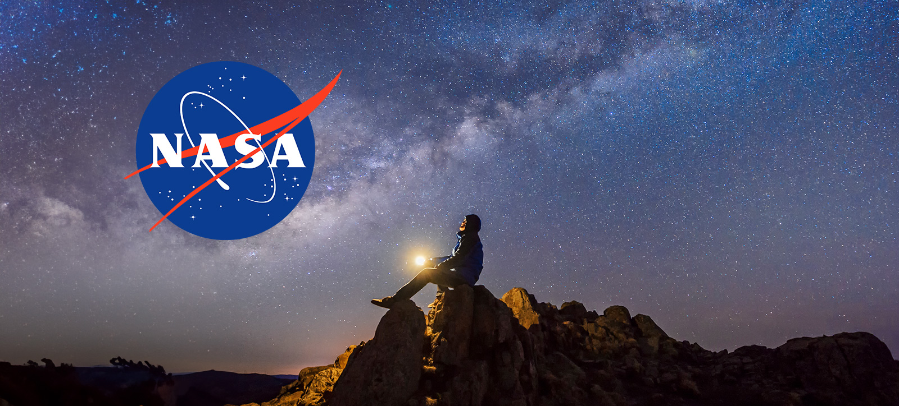
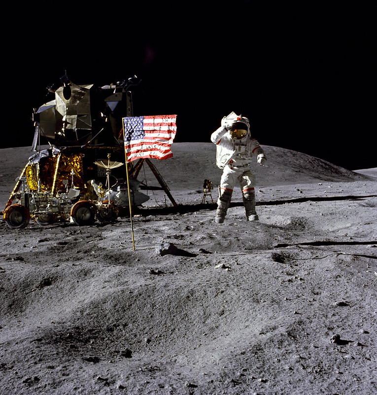
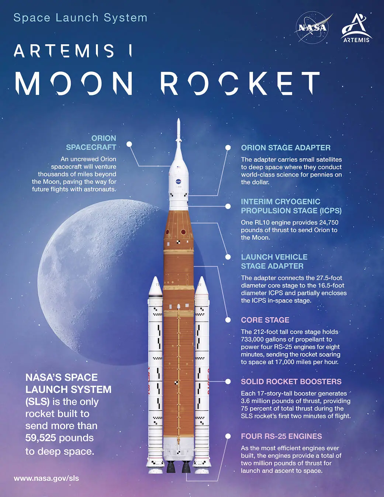

Front Row Space Adventure
NASA History

NASA & The Galaxy
NASA stands for the National Aeronautics and Space Administration. It officially began on October 1, 1958, in the United States, with its headquarters in Washington, D.C. NASA studies space, flight, planets, astronauts, and even Earth. The story really starts with people asking one huge question: how far can we go?
Before NASA
Before NASA, there was a group called the National Advisory Committee for Aeronautics, also called NACA. NACA started on March 3, 1915. One of its important research centers was Langley Memorial Aeronautical Laboratory in Hampton, Virginia. NACA focused mostly on airplanes and how flight worked. That may sound simple now, but at the time, figuring out how to fly higher, faster, and safer was a big deal. NASA grew from that work and took the mission even further, from the sky into space.
The Space Race
NASA was created during the Space Race. This became even more intense after the Soviet Union launched Sputnik 1 on October 4, 1957, from Baikonur Cosmodrome in present-day Kazakhstan. The United States and the Soviet Union were both trying to make major space discoveries first. It was a serious competition, but it also pushed science and technology forward very quickly. NASA had to learn how to send humans into space, keep them alive up there, and bring them back safely.
Mercury, Gemini, and Apollo
NASA did not just wake up one day and land people on the Moon. There were steps. Project Mercury began in 1958 and helped prove that a person could survive a trip into space. On May 5, 1961, Alan Shepard launched from Cape Canaveral, Florida, and became the first American in space. Project Gemini ran during the 1960s and helped astronauts practice important skills, like walking in space and connecting spacecraft together. Apollo was the big Moon mission program, launched from Kennedy Space Center in Florida. Each program helped build the next one.
The Moon Landing

The Moon landing
On July 20, 1969, Apollo 11 landed on the Moon in an area called the Sea of Tranquility. Neil Armstrong and Buzz Aldrin walked on the lunar surface, while Michael Collins stayed in orbit around the Moon. The mission launched from Kennedy Space Center in Florida on July 16, 1969, and returned to Earth by splashing down in the Pacific Ocean on July 24, 1969. This moment mattered because it showed what can happen when science, teamwork, math, engineering, and imagination all get pointed at one giant goal.
NASA After the Moon
NASA did not pack up and say, “okay, we are done here.” After Apollo, NASA kept exploring. The first Space Shuttle, named Columbia, launched from Kennedy Space Center in Florida on April 12, 1981. NASA helped build the International Space Station, where astronauts began living full-time in low Earth orbit in November 2000. NASA also sent robots to other planets, like the Mars rovers Spirit and Opportunity, which landed on Mars in January 2004. NASA uses telescopes too, including the Hubble Space Telescope, which launched from Florida on April 24, 1990, to study stars, galaxies, and black holes. NASA also studies Earth, including weather, oceans, climate, and natural disasters.
NASA Today

Artemis I Rocket
Today, NASA is working on the Artemis program, which is about returning astronauts to the Moon and preparing for future missions to Mars. Artemis I launched from Kennedy Space Center in Florida on November 16, 2022, and traveled around the Moon without astronauts onboard. The goal was to test the rocket and spacecraft before sending people.
Artemis II launched from Launch Complex 39B at Kennedy Space Center in Florida on April 1, 2026. This mission carried four astronauts around the Moon: Reid Wiseman, Victor Glover, Christina Koch, and Jeremy Hansen from the Canadian Space Agency. Artemis II mattered because it was the first crewed Artemis mission and the first time humans traveled around the Moon in more than 50 years.
Artemis II splashed down in the Pacific Ocean off the coast of San Diego, California, on April 10, 2026. The crew did not land on the Moon, but that was not the goal yet. This mission was NASA basically saying, “before we go all the way back, let us test the rocket, spacecraft, crew, and safety systems first.” NASA history is not only about the past. It is also about the next generation of scientists, engineers, astronauts, artists, coders, and students who may help decide where space exploration goes next.
Quick Timeline
- March 3, 1915: NACA is created in the United States.
- October 4, 1957: Sputnik 1 launches from Baikonur Cosmodrome.
- October 1, 1958: NASA officially begins in the United States.
- May 5, 1961: Alan Shepard launches from Cape Canaveral, Florida, and becomes the first American in space.
- July 20, 1969: Apollo 11 lands humans on the Moon at the Sea of Tranquility.
- April 12, 1981: The first Space Shuttle launches from Kennedy Space Center, Florida.
- April 24, 1990: The Hubble Space Telescope launches from Florida.
- November 2000: Astronauts begin living on the International Space Station full-time.
- November 16, 2022: Artemis I launches from Kennedy Space Center, Florida, and travels around the Moon without astronauts onboard.
- April 1, 2026: Artemis II launches from Launch Complex 39B at Kennedy Space Center, Florida, with four astronauts onboard.
- April 10, 2026: Artemis II splashes down in the Pacific Ocean off the coast of San Diego, California.
- Today: NASA is using Artemis missions to prepare for future Moon landings and, eventually, missions toward Mars.
Why This Matters
NASA history matters because it shows that big discoveries do not happen all at once. They happen one mission, one test, one mistake, and one new idea at a time. From airplane research in Hampton, Virginia, to Moon launches in Florida, to robots exploring Mars, space exploration starts with curiosity. Questions like “what is out there?” and “how do we get there?” can turn into real missions, real careers, and real discoveries.